Работала со сложными интерфейсами для B2B2E/B2C-продуктов в
EdTech. Вела задачи полного цикла — от исследования до прототипа и
юзабилити-тестирования.
UX Research
Information Architecture
User flow
UI
Prototyping
Usability Testing
AI
Мои проекты
UX/UI
LMS
Web app
EdTech
Исследования и аналитика
Проектирование интерфейса LMS-платформы «Радиум»
LMS-платформа для обучения разработке игр: курсы, кодовые
задания, автоматическая проверка и управление учебным
процессом — в одном рабочем пространстве.
11/13
прошли сценарий без подсказок
0
критических ошибок
4,77/5
оценка удобства платформы
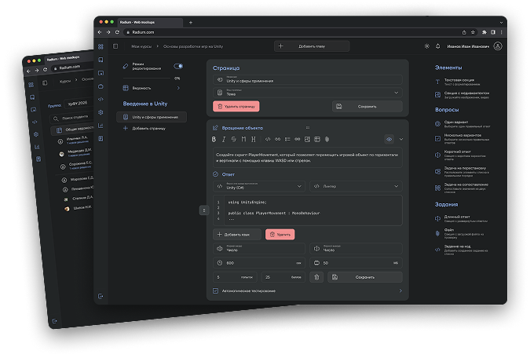
UX/UI
Web
Mobile
EdTech
Interaction
Проектирование дизайна интерактивных обучающих модулей для обучения персонала кофейни
UI-дизайн 8 обучающих модулей, которые помогают сотрудникам
осваивать регламенты через практические сценарии.
8
модулей и мини-игр
328
участников опроса
88%
положительных оценок
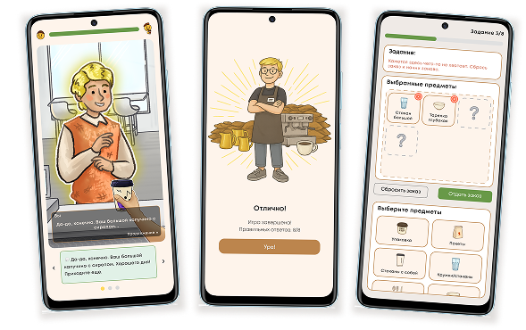
Обо мне
Технический бэкграунд позволяет смотреть на
продукт глазами пользователя и разработчика.
Мне интересно превращать сложную бизнес-логику в понятную архитектуру и предсказуемый пользовательский путь.
В работе соединяю исследование, структуру, визуальный язык и внимание к тому, как интерфейс ведёт себя в реальных
сценариях.
Образование
Уральский федеральный университет
Институт радиоэлектроники и информационных технологий — РТФ. Прикладная информатика, бакалавриат.
Уральский федеральный университет
DevOps: виртуализация и облачные вычисления для бизнеса. Диплом о профессиональной переподготовке.
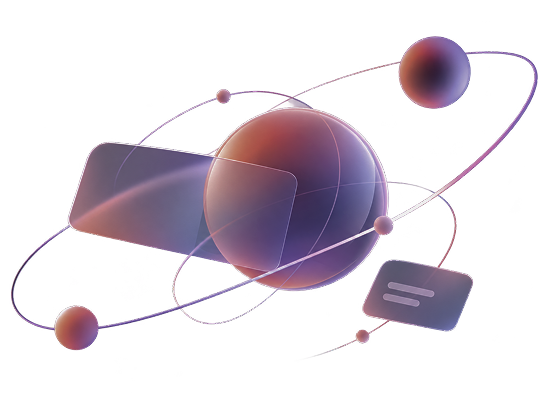
Проектирование интерфейса LMS-платформы «Радиум» для обучения разработке игр
LMS-платформа для обучения разработке игр: курсы, кодовые задания, автоматическая проверка и управление учебным процессом — в одном рабочем пространстве.
4 пользовательские роли · 5 пользовательских путей · 32 экрана · 20+ компонентов
Платформа
WEB
Проблема
Отсутствие единой среды с автопроверкой заставляет тонуть в ручной работе, затягивает обратную связь и делает качественные курсы Unity немасштабируемыми.
UX-боль: Необходимость постоянно переключаться между теорией в LMS и написанием кода в IDE ломает фокус студента и приводит к быстрому утомлению.
UX-задача
Cпроектировать единую среду для обучения Unity, которая сокращает переключение между инструментами, но не перегружает пользователя функциональностью IDE и LMS одновременно.
Исследование
Я провела интервью с представителями целевой аудитории, чтобы понять, с какими трудностями они сталкиваются и чего ожидают от учебного процесса. По результатам исследования выделила три основные группы пользователей с разными задачами и потребностями.
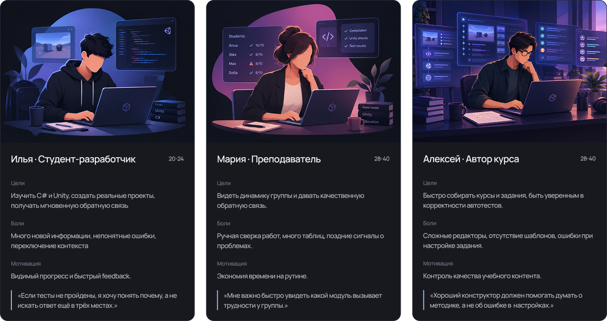
Гипотезы и решения
Гипотеза 1
Переключение между средами ломает рабочий процесс
Решение → Редактор кода и результат проверки встроены в тот же рабочий контекст, где пользователь получает задание.
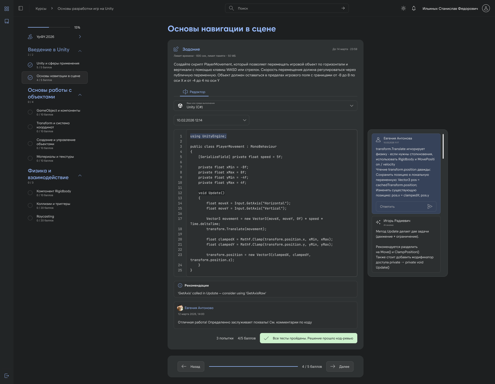
Гипотеза 2
Преподавателю нужен быстрый и понятный обзор работ и их статусов
Решение → Ведомость — управляемый обзор: фильтры по главам, выгрузка в Excel, структурированные темы и подсветка студентов с новыми заданиями.
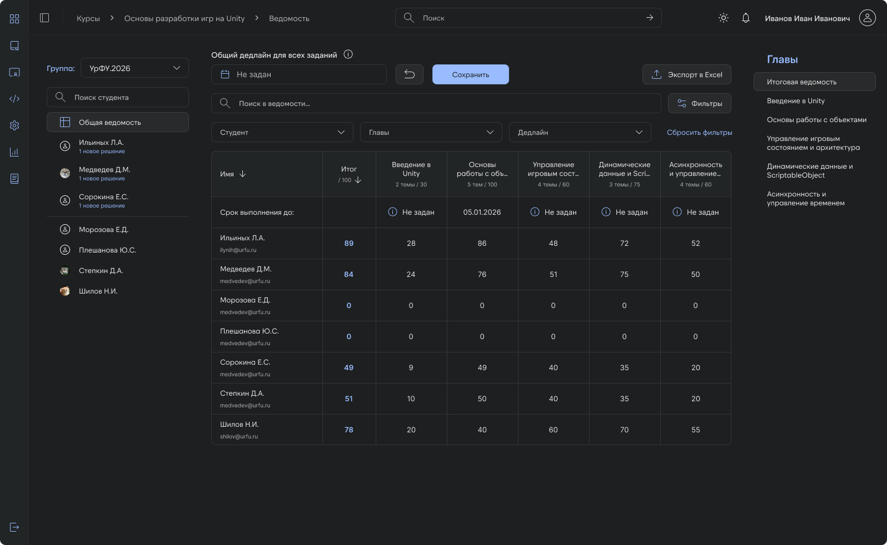
Гипотеза 3
Автору нужен быстрый и понятный путь создания задания
Решение → Сценарий настройки кодового задания разбит на пошаговый степпер вместо одного перегруженного экрана.
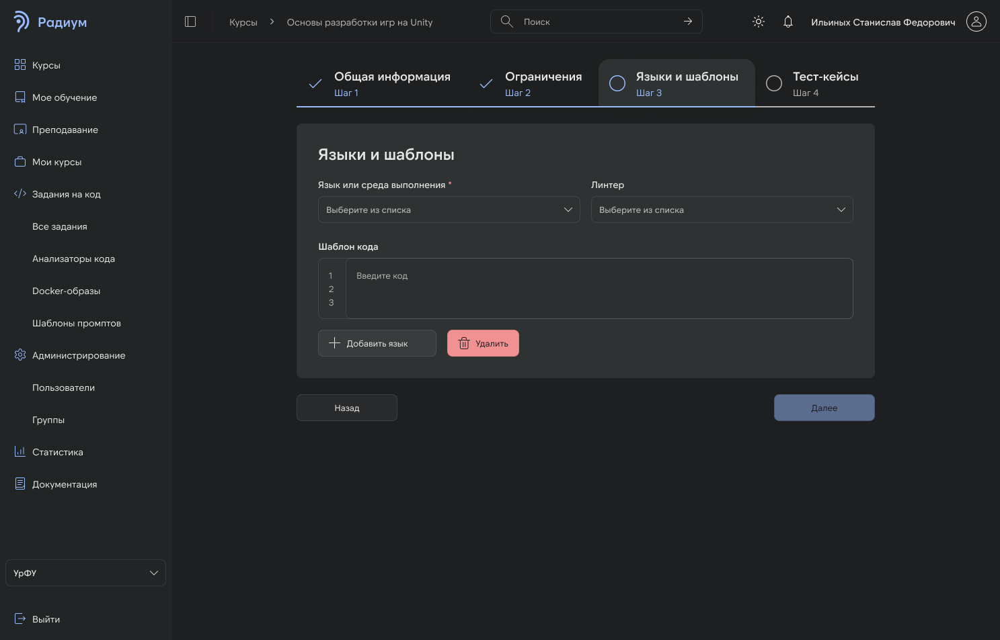
Информационная архитектура
В основе структуры лежит принцип иерархической организации разделов и наследования прав доступа. Карта сайта демонстрирует логичную иерархию интерфейса, последовательное расширение функциональности в зависимости от роли пользователя и обеспечивает удобную навигацию по системе.
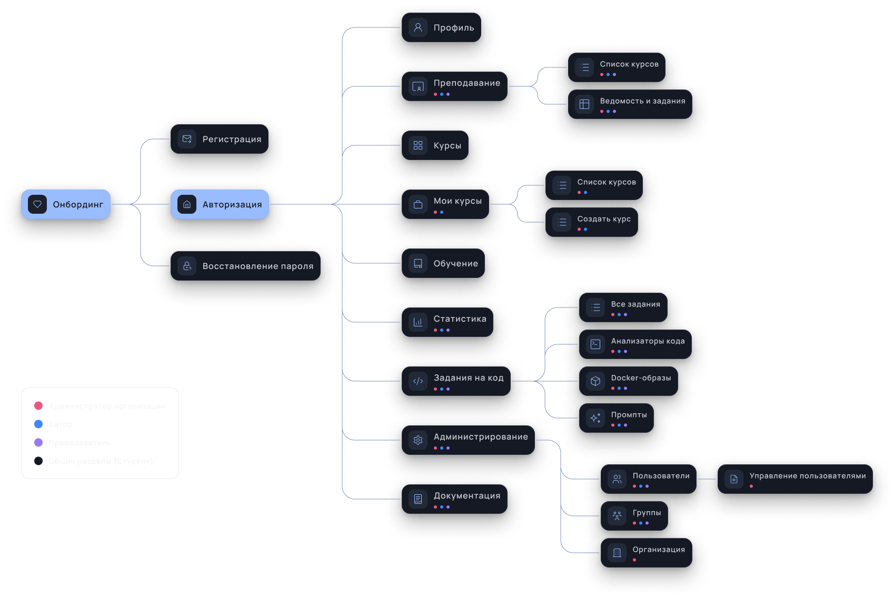
Юзабилити-тестирование
Сценарное тестирование показало отсутствие критических ошибок в ключевых путях и одновременно выявило проблему с обнаружением ведомости и её рабочим сценарием.
Ограничения проверки
Прототип позволил оценить понятность основных сценариев, но не дал возможности достоверно измерить время выполнения сложных задач с реальным вводом данных. Поэтому временные и бизнес-показатели требуют проверки на работающем продукте.
Было · V1 — Ведомость
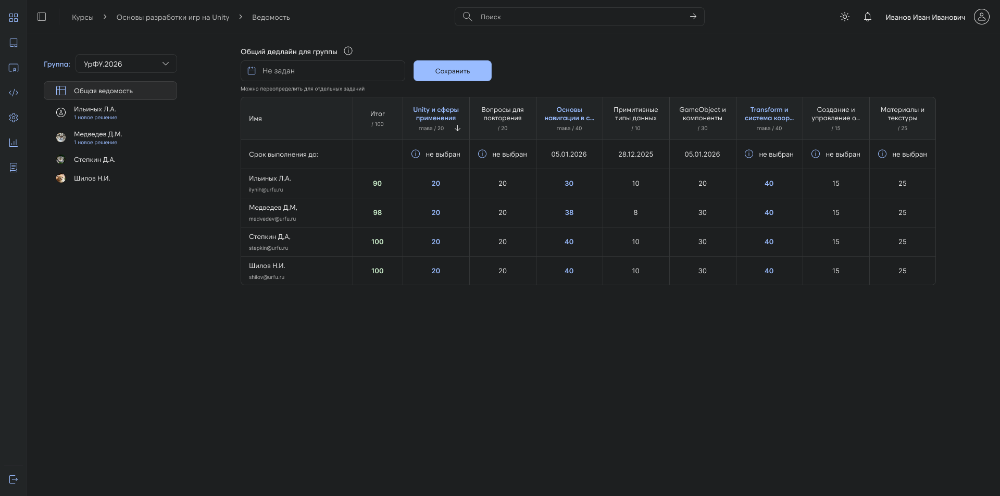
Стало · V3 — Ведомость
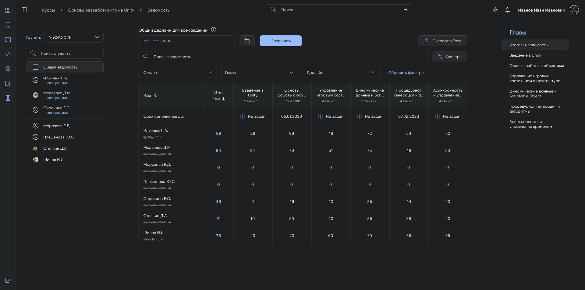
Ведомость стала управляемым обзором: фильтры по главам и общие, выгрузка в Excel, структурированные темы и визуальное выделение студентов с новыми заданиями.
Было · V1 — Настройки учебной группы
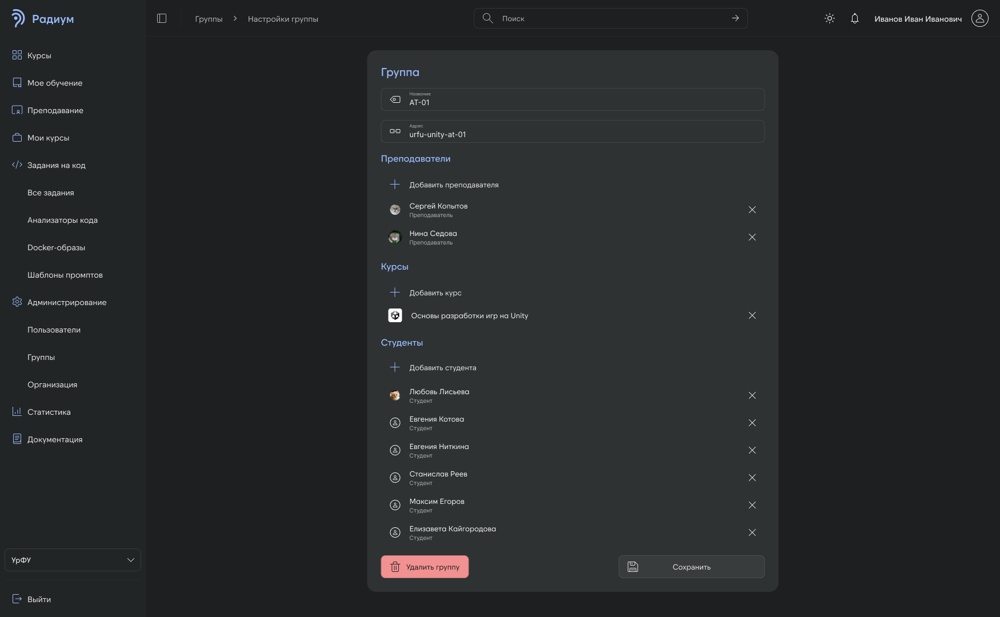
Стало · V3 — Настройки учебной группы
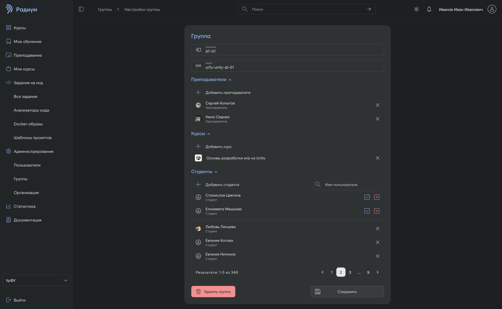
Интерфейс управления группой стал масштабируемым под длинные списки: поиск по студентам ускоряет навигацию, пагинация снижает визуальную перегрузку, сворачиваемые секции управляют плотностью информации — в итоге повышается сканируемость.
Результат
Провела юзабилити-тестирование: 13 участников, 11 из 13 участников прошли сценарии без подсказок, оценка удобства — 4,77/5, оценка визуального дизайна — 4,85/5.
13участников тестирования
11/13прошли сценарии без подсказок
4,77/5оценка удобства
4,85/5оценка визуального дизайна
Ожидаемый эффект и дальнейшая проверка
Продукт находится в разработке, поэтому реальные показатели эффективности пока нельзя оценить.
Что можно проверить после запуска
Студент: доля успешно завершённых сценариев, время до понимания ошибки;
Преподаватель: время на поиск работы и среднее время проверки;
Автор курса: доля завершённых сценариев и количество ошибок настройки заданий и курсов.
Ожидаемый эффект: меньше переключений между инструментами, упрощение контроля учебного процесса и уменьшение ошибок при настройке заданий и курсов.
Проектирование дизайна интерактивных обучающих модулей для обучения персонала кофейни
UI-дизайн 8 обучающих модулей, которые помогают сотрудникам осваивать регламенты через практические сценарии.
Роль
UX/UI-дизайнер
Обязанности
UI Design, UI-kit, Prototyping, QA
Объем проекта
8 модулей и мини-игр
Формат
Web и Mobile
Проблема
Существующая система обучения сотрудников построена на длинных текстовых инструкциях и регламентах. Новичкам трудно усваивать большие объемы информации. Для бизнеса это оборачивается долгим онбордингом и частыми ошибками стажеров на смене.
UX-задача
Спроектировать интерактивные обучающие модули, которые переведут рутинные инструкции и регламенты сети в игровой формат.
Глубинные интервью
По результатам глубинных интервью команда выявила основные сложности сотрудников на этапе обучения.
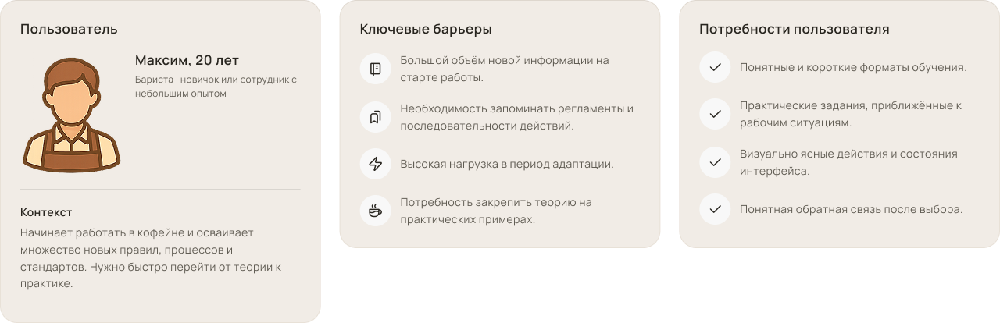
Интерактивность на протяжении всего обучения
Игровые механики использовались не только в финальных заданиях, но и на промежуточных этапах обучения. В теорию и тесты были добавлены интерактивные элементы, которые помогали разнообразить подачу информации.
В рамках своей задачи я разрабатывала визуальное представление этих механик: оформляла интерактивные карточки, состояния заданий, индикаторы прогресса и элементы обратной связи.
Выбор предметов сервировки
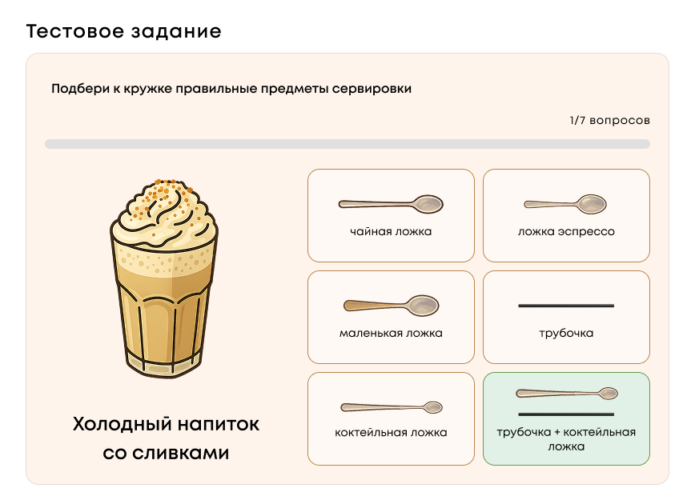
Найти пару
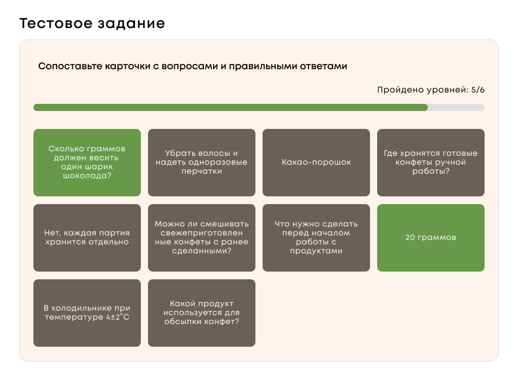
Игровой сценарий в интерфейсе
Интерактивные мини-игры встроены как финальный этап каждого обучающего модуля. После короткой теории и мини-тестов сотрудник проходит игровой сценарий, моделирующий реальную рабочую ситуацию
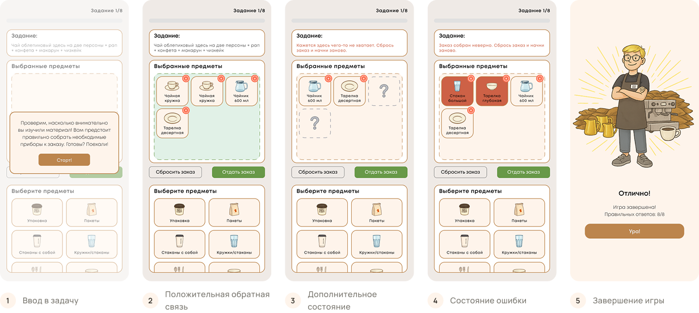
Визуальный стиль
Визуальное направление строилось на сочетании тёплых оттенков, ассоциирующихся с кофе и уютной атмосферой кофейни, и ярких акцентных цветов, которые помогают выделять интерактивные элементы и привлекать внимание пользователя.
ОранжевыйАкцентирует внимание на интерактивных элементах
МолочныйОсновной фон, создаёт лёгкую и тёплую атмосферу
КарамельПоддерживает кофейную тематику, используется в карточках и элементах интерфейса
ЗеленыйПоказывает правильные ответы и успешные действия
КоралловыйПомогает быстро распознать ошибку
Результат
Интерактивные мини-игры встроены как финальный этап каждого обучающего модуля. После короткой теории и мини-тестов сотрудник проходит игровой сценарий, моделирующий реальную рабочую ситуацию